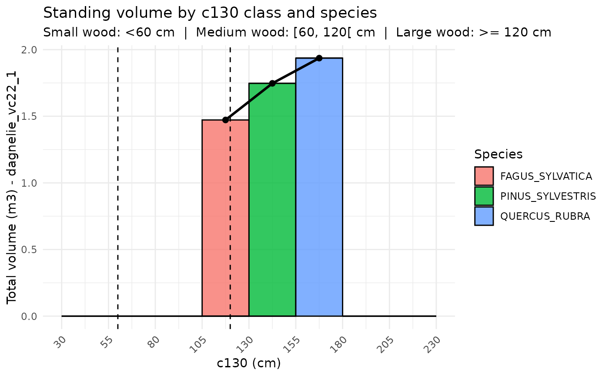

This function takes a dataframe containing tree measurements (circumference, diameter, height, species code) and enriches it by:
Converting circumference at 1.50 m (
c150) to circumference at 1.30 m (c130).Adding diameter at breast height (
dbh) if missing, or converting back toc130.Applying a suite of allometric equations for volume, biomass, and carbon stock estimation.
Arguments
- data
A
data.framewith at least:species_code: tree species identifier (character),c150,c130, ordbh: stem circumference or diameter,optionally
htot(total height) andhdom(dominant height).
- output
Optional file path where the resulting data frame should be exported as a CSV. If NULL (default), no file is written. Export is handled by the utility function
export_output()and failures trigger warnings without interrupting execution.- volume_col
Optional character string naming the column of volume to use for plotting in
plot_by_class. If NULL (default), the function will automatically select the first available column among:dagnelie_vc22_1,dagnelie_vc22_1g,dagnelie_vc22_2,dagnelie_br,vallet_vta,vallet_vc22,bouvard_vta,rondeux_vc22,rondeux_vtot,algan_vta, oralgan_vc22.
Value
A data.frame identical to the input but augmented with:
c130anddbh(ensured to be present),outputs from Dagnelie, Vallet, Algan, Rondeux, Bouvard functions,
biomass and carbon stock estimates.
Details
Orchestrates the GCubeR pipeline by sequentially applying allometric conversion and biomass/volume functions to a user-provided dataset.
The following functions are called in order:
c150_to_c130add_c130_dbhdagnelie_vc22_1dagnelie_vc22_1gdagnelie_vc22_2dagnelie_brvallet_vtavallet_vc22algan_vta_vc22rondeux_vc22_vtotbouvard_vtabiomass_calc
Examples
data <- data.frame(
tree_id = 1:3,
species_code = c("PINUS_SYLVESTRIS", "QUERCUS_RUBRA", "FAGUS_SYLVATICA"),
c150 = c(145, NA, NA),
c130 = c(NA, 156, NA),
dbh = c(NA, NA, 40),
htot = c(25, 30, 28),
hdom = c(NA, 32, NA)
)
GCubeR(data)
#> 1'c130' values filled from 'dbh'
#> 2'dbh' values filled from 'c130'
#> Warning: hdom out of range for 1 tree(s): row 2 (species QUERCUS_RUBRA, min=12, max=30, found=32)
#> Warning: Unknown species (missing vta coefficients): QUERCUS_RUBRA. Form factor and vta will be set to NA for these rows.
#> Warning: Unknown species (missing vc22 coefficients): QUERCUS_RUBRA. vc22 will be set to NA for these rows.
#> tree_id species_code c150 c130 dbh htot hdom dagnelie_vc22_1
#> 1 1 PINUS_SYLVESTRIS 145.0000 146.7356 46.70739 25 NA 1.746874
#> 2 2 QUERCUS_RUBRA 153.9381 156.0000 49.65634 30 32 1.936043
#> 3 3 FAGUS_SYLVATICA NA 125.6637 40.00000 28 NA 1.472144
#> dagnelie_br dagnelie_vc22_1g dagnelie_vc22_2 vallet_vta vallet_vc22
#> 1 0.05336731 NA 1.801435 2.290586 2.109885
#> 2 0.54602889 2.550417 2.507056 NA NA
#> 3 0.25077783 NA 1.582928 2.106551 1.775045
#> Circumference constraint violated: 3 tree(s) have c130 < 10 cm or > 70 cm. Rondeux volumes will be set to NA for these rows: 1, 2, 3FALSE
#> No compatible species (LARIX_DECIDUA or LARIX_SP) found. No Rondeux volume columns created.
#> No compatible species found for Bouvard method (only QUERCUS_SP is supported). No volume column created.
#> The following rows have no trunk volume values in column 'vallet_vc22'. CNPF (Vallet) will be skipped for these rows: 2
#> Column 'rondeux_vc22' not found. CNPF (Rondeux) will be skipped.
#> Column 'algan_vc22' not found. CNPF (Algan) will be skipped.

#> # A tibble: 4 × 4
#> species_code `[105,130)` `[130,155)` `[155,180)`
#> <chr> <dbl> <dbl> <dbl>
#> 1 FAGUS_SYLVATICA 1.47 0 0
#> 2 PINUS_SYLVESTRIS 0 1.75 0
#> 3 QUERCUS_RUBRA 0 0 1.94
#> 4 TOTAL 1.47 1.75 1.94
#> tree_id species_code c150 c130 dbh htot hdom dagnelie_vc22_1
#> 1 1 PINUS_SYLVESTRIS 145.0000 146.7356 46.70739 25 NA 1.746874
#> 2 2 QUERCUS_RUBRA 153.9381 156.0000 49.65634 30 32 1.936043
#> 3 3 FAGUS_SYLVATICA NA 125.6637 40.00000 28 NA 1.472144
#> dagnelie_br dagnelie_vc22_1g dagnelie_vc22_2 vallet_vta vallet_vc22
#> 1 0.05336731 NA 1.801435 2.290586 2.109885
#> 2 0.54602889 2.550417 2.507056 NA NA
#> 3 0.25077783 NA 1.582928 2.106551 1.775045
#> vc22_dagnelie vc22_source cnpf_dagnelie_bag cnpf_dagnelie_bbg
#> 1 1.801435 dagnelie_vc22_2 1.030421 0.4732076
#> 2 2.507056 dagnelie_vc22_2 2.190164 0.9212918
#> 3 1.582928 dagnelie_vc22_2 1.358152 0.6039839
#> cnpf_dagnelie_btot cnpf_dagnelie_c cnpf_dagnelie_co2 cnpf_vallet_bag
#> 1 1.503628 0.7142234 2.618819 1.206854
#> 2 3.111456 1.4779414 5.419119 NA
#> 3 1.962136 0.9320147 3.417387 1.522989
#> cnpf_vallet_bbg cnpf_vallet_btot cnpf_vallet_c cnpf_vallet_co2 vallet_bag
#> 1 0.5441295 1.750984 0.8317172 3.049630 1.007858
#> 2 NA NA NA NA NA
#> 3 0.6683175 2.191306 1.0408705 3.816525 1.158603
#> vallet_bbg vallet_btot vallet_c vallet_co2
#> 1 0.4640402 1.471898 0.6991515 2.563556
#> 2 NA NA NA NA
#> 3 0.5248616 1.683465 0.7996458 2.932034